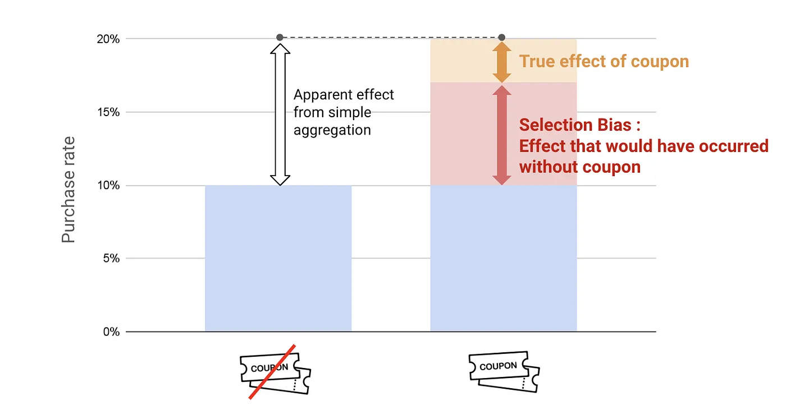

3.1 因果的に考える
日本語版について
このページは英語版 Marketing Science in Python のAI翻訳です。英語版を正本とし、差異がある場合は英語版を優先してください。コード、Notebook、画像内の文字は英語のままです。 英語版を読む
多くのデータサイエンティストがビジネスで直面する典型的な状況を考えてみましょう。マーケティングチームの同僚を支援していて、次のように言われたとします。
「マーケティングチームが一部のユーザーへクーポンを送りました。その人たちの購入率は、受け取らなかった人の2倍でした。つまり、クーポンによって購入率が2倍になったはずです！」

この結論に同意しますか？一見すると、同意したくなるかもしれません。しかし、次の追加情報を知ったらどうでしょうか。
「過去12カ月以内に購入した顧客だけへクーポンを送りました。」
これは危険信号です。何が問題になり得るのでしょうか？
セレクションバイアス
重要な問いは、クーポンの真の影響は何か、です。意図的な基準に基づいてクーポンを配布した場合、購入率を公平に比較できません。クーポンを受け取った顧客は、受け取らなくても購入していた可能性があります。もともと関与度が高く、ニュースレターやソーシャルメディアなど、ほかの要因から影響を受けていたかもしれません。こうした要因によって、セレクションバイアスと呼ばれる問題が生じます。 これは、処置群と非処置群が最初から比較可能でないときに生じる歪みです。

群間の10ポイントの差は大きく見えますが、その大半はクーポンを送る前から存在していました。クーポンによる真のリフト、つまりクーポンがなければ起きなかった部分は、数ポイントにすぎないかもしれません。残りはセレクションバイアスです。どちらにしても購入する可能性が高い人へクーポンを送っていたのです。
このパターンはマーケティングで頻繁に見られます。リターゲティングキャンペーンのコンバージョン率が高いのは、すでにサイトを訪れた人へ届くからです。メールキャンペーンの受信者当たり売上が良く見えるのは、関与度の最も高い購読者へメールが届くからです。どちらも、処置が結果を引き起こしたからではなく、顧客の意向によって処置と結果が結びついています。
因果推論とは何か？
では、こうした罠をどう乗り越えればよいのでしょうか。ここで因果推論が登場します。
因果推論は、特定の行動（「処置」）とその結果（「アウトカム」）の間に因果関係があるかを明らかにするものです。従来、医療などの分野で中心的な役割を果たしてきました。一般的な利用例の一つは、新薬が病気を効果的に治療するかを評価することです。この場合、薬を投与することが「処置」、患者の回復が「アウトカム」です。
しかし、因果推論は医療だけのものではありません。Eコマースやマーケティングでは、クーポン送付、広告掲載、ダイレクトメールキャンペーンといった行動が「処置」、購入、登録、売上などが「アウトカム」になります。

反実仮想
因果推論の主な課題は、一人の個人について一つのアウトカムしか観察できないことです。タイムマシンがあれば、顧客へクーポンを渡し、時間を巻き戻して、渡さなかった場合に何が起きるかを確認できます。現実にはできません。顧客ごとに、物語の一方しか見ることができません。
そこで因果推論を使います。実際には起きなかったアウトカム、すなわち反実仮想を推定できます。

これを形式化すると、問題が明確になります。顧客一人に対する処置効果は次のとおりです。
\[\tau = Y(1) - Y(0)\]
ここで、\(Y(1)\) は処置を受けた場合に起きること、\(Y(0)\) は受けなかった場合に起きることです。問題は、一人についてどちらか一方しか見られないことです。これを考慮せずに処置群と非処置群を比較すると、真の効果と、もともと存在した差を混同します。それがセレクションバイアスです。
A/Bテストを実施すればよいのでは？
「A/Bテストを実施すればよいのでは？」と思うかもしれません。
マーケティングでは、この方法をA/Bテストと呼び、 より広い因果推論の文献ではランダム化比較試験（RCT）とも呼ばれます。因果的な問いに答えるための「ゴールドスタンダード」とされることがよくあります。仕組みは次のとおりです。
顧客を「処置群」と「対照群」の2群へ無作為に分けます。処置群はクーポンを受け取り、対照群は受け取りません。処置群の購入率が40%、対照群が20%になったとします。その差である20パーセントポイントがクーポンの効果です。

重要なのは無作為化です。顧客を無作為に割り当てることで、顧客の嗜好、過去の行動、チャネルへの接触など、ほかの要因が両群で均衡するようにします。この均衡によって、比較を歪めるセレクションバイアスが取り除かれます。
A/Bテストの限界
A/Bテストを理解すれば、常に完璧な解決策になるのでしょうか。残念ながら、そうではありません。A/Bテストは利用可能な中で最も強い証拠を提供しますが、実施できない状況も多くあります。
機会損失。 A/Bテストを実施すると、顧客の半分は新商品やオファーを受け取りません。売上や成長の機会を逃す可能性があり、ビジネスにとって常に許容できる「機会損失」とは限りません。
時間の制約。 A/Bテストには時間がかかる場合があります。信頼できる結論を出すのに十分なデータを集めるため、数週間、場合によっては数カ月を要します。その遅れによって市場機会を逃したり、競争上の優位性を失ったりする可能性があります。
関係者の複雑さ。 複数の関係者が関わると、A/Bテストは難しくなります。すべてのクライアントやパートナーが、効果的に実施できる資源や能力を持つわけではありません。
A/Bテストを選べない場合は、意図的な実験を行わずに収集された観察データへ頼る必要があります。
シンプソンのパラドックス：観察データの課題
観察されたマーケティングデータは、パターンが明らかに見えても誤解を招く場合があります。
メール頻度と配信停止リスクの関係を理解したいとします。各購読者について、受け取るマーケティングメールの数と、配信停止する可能性をプロットします。集約データには意外なパターンが見えます。多くのメールを受け取る購読者ほど、配信停止する可能性が低く見えるのです。
一見すると、メールを多く送ると配信停止リスクが下がるように思えます。しかし、この結論には違和感を持つべきです。同じタイプの購読者であれば、メールを送りすぎると、通常は配信停止の可能性が下がるのではなく上がるはずです。
何が欠けているのでしょうか。過去のメールへの関与度です。
マーケティングチームが無作為にメールを送ることはほとんどありません。メールを頻繁に開封しクリックする購読者は、活発に反応するため、通常はより多くのキャンペーンを受け取ります。ほとんど反応しない購読者は、キャンペーン数を減らされたり、一部の配信から除外されたりします。こうした群は、もともとの配信停止リスクが大きく異なります。
過去のメールへの関与度で購読者を分けると、パターンは逆転します。どの関与度の群でも、メール頻度が高いほど、配信停止リスクが高くなります。（関与度の低い購読者は全体として配信停止しやすいものの、各群の中では、メールを多く送るほどリスクが上がります。）
これがシンプソンのパラドックスです。 集約した傾向が示すことと、比較可能な群の中のパターンが示すことが反対になります。

交絡変数
メールの例では、過去の関与度が交絡変数です。 交絡変数とは、処置（メール頻度）とアウトカム（配信停止リスク）の両方へ影響する変数です。交絡因子を考慮しないと、先ほど見たような効果の完全な逆転を含め、誤解を招く結論へ至る可能性があります。そのため、観察データを用いた因果推論では、こうした変数の特定と制御が中心になります。

教訓は、観察データでは、数値の背後に交絡変数が隠れていないかを常に問うことです。
Part 3のロードマップ
進め方は次のとおりです。最初の仕事は、信頼できる比較を得ることです。無作為化できるなら、A/Bテストが最も信頼できる答えを提供します。できない場合は、処置の割り当て方から準実験デザインによって比較を再構築します。これには、既知の日付に全員へ届いた施策について、時系列自身の履歴から欠けている非処置の経路を予測する方法も含まれます。信頼できる効果が得られたら、2番目の仕事が始まります。どちらにしてもコンバージョンした人への支出を止められるよう、効果が顧客ごとにどう異なるかを問います。それを行うのがメタラーナーとアップリフトモデリングです。